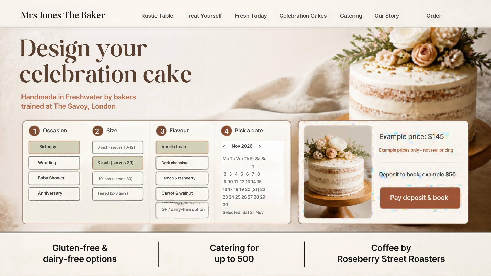

Tomas Web Studio · Business plan
✨ Living websites
A site that stays fresh by itself, and the reason clients keep their monthly care plan.
A free redesign to show what I can do. Barry and Lucy Jones trained at The Savoy in London and worked in New York, Paris, Harrods and Café Sydney. Their bakery has a great story: two-day artisan bread (organic flour, natural starter, sea salt, spring water), a four-deck hearth oven with a viewing window, celebration cakes and catering for up to 500, GF/DF options, Roseberry Street Roasters coffee and seasonal gelato.
I made 3 concept pages:
- Fresh out of the oven: a live board showing what's just out and what's sold out today.
- Celebration cake builder: choose occasion, size, flavour and date, see the price, pay a deposit to book.
- The Jones story: Savoy to Freshwater, plus a loyalty club and a bread subscription.
One great real example beats any sales pitch. The next two pages show the mock-ups.
Permission first. The main mock-ups use the bakery's real logo and photos. They are private drafts. Nothing goes public (my website, my Instagram, other pitches) until Mrs Jones The Baker says yes in writing. If they say no, I only show the Canva concepts, which use no real branding.
The concepts (unbranded)
Made in Canva with no real logo or photos. The branded versions stay private until the bakery says yes in writing.



How a living website updates itself
How the site updates itself
- Schedule: the top banner changes by time of day: bread in the morning, gelato in the afternoon, cake pickups on weekends.
- Staff phone app: one tap marks bread "Just out", "Selling fast" or "Sold out".
- Instagram: new posts appear on the site automatically.
- TikTok / Reels: new "watch the bakers" videos show up by themselves.
- Google reviews: the star rating and newest good reviews update by themselves.
- Facebook events: classes and events appear in "This week at Mrs Jones".
- Customer photos: posts tagged #MrsJonesCakes fill a photo wall (approved first).
Why this is the upsell: the site stays fresh without the owner doing anything. Keeping it all connected and running is part of my monthly care plan, so it's a reason to keep paying every month, not just once.